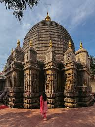
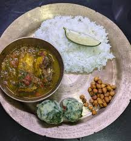

🌍 Heritage
- Kamakhya Temple
- Majuli – World’s Largest River Island
- Dhemaji and Sivasagar Monuments


Assam is known for its lush tea gardens, the mighty Brahmaputra River, Kaziranga National Park, and the unique culture of Bihu festivals. It is one of the greenest and culturally rich states of India.
Assamese Thali & Masor Tenga (Tangy Fish Curry)

Assam produces more than 50% of India's total tea — making it the **Tea Capital of India**!